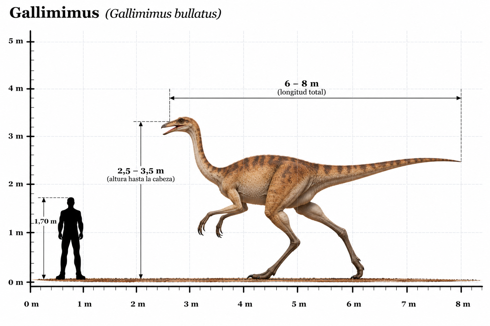

Gallimimus bullatus

El Gallimimus bullatus fue un dinosaurio terópodo que habitó Asia durante el Cretácico tardío, hace aproximadamente 70 millones de años, en lo que actualmente es Mongolia. Su nombre significa "imitador de gallina", debido a ciertas semejanzas de su anatomía con la de las aves actuales. Se caracterizaba por su cuerpo ligero, cuello largo, cabeza pequeña y pico sin dientes. Sus patas traseras eran largas y delgadas, mientras que su extensa cola le ayudaba a mantener el equilibrio durante el desplazamiento. Pertenecía al grupo de los ornitomímidos, dinosaurios que presentaban un aspecto semejante al de los avestruces actuales. Gracias a sus extremidades posteriores, probablemente era un corredor rápido, aunque su velocidad máxima exacta no se conoce. Su alimentación continúa siendo objeto de investigación. Se considera probable que fuera omnívoro y que consumiera distintos tipos de vegetación y pequeños animales. Como otros ornitomimosaurios, pudo presentar un recubrimiento de plumas, aunque no se han encontrado evidencias directas de plumaje en Gallimimus.
- Grupo: Terópodo (ornitomimosaurio).
- Familia: Ornithomimidae (ornitomímidos).
- Período: Cretácico tardío (hace aproximadamente 70 millones de años).
- Alimentación: Probablemente omnívoro.
- Longitud: Aproximadamente 6 metros.
- Altura: Aproximadamente 2 metros hasta la cadera.
- Localización: Asia (actual Mongolia).
